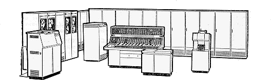

М-220М-220 - цифровая электронная вычислительная машина общего назначения. Предназначена для решения научно-технических, а также отдельных классов экономических задач. По структуре и системе команд “М-220” аналогична “М-20”, но построена на полупроводниковых приборах. Быстродействие - около 27 тысяч трехадресных операций в 1 секунду.  Центральный вычислитель состоит из блока управления и арифметического устройства; предназначен он для выполнения операций над числами и командами. Оперативное ЗУ (ОЗУ) на ферритовых сердечниках со временем обращения 6 микросекунд имеет емкость от 4 тысяч до 16 тысяч 47-разрядных слов. Внешнее ЗУ (ВЗУ) на магнитной ленте состоит из 4 лентопротяжных механизмов и одной стойки управления, имеет общую емкость 4 миллиона слов. Скорость чтения или записи информации составляет 5 тысяч слов в 1 секунд (предусмотрена возможность увеличения емкости накопителя на магнитных лентах до 16 миллин слов). ВЗУ на магнитном барабане имеет емкость 24 тысяч слов. Кроме того, имеется буферное ЗУ на 1024 слова, используемое для вывода информации. Максимальное время обращения к магнитному барабану не превышает 60 миллисекунд, а скорость обмена составляет 17 тысяч слов в 1 секунду. Предусмотрена возможность дополнительно подключать магнитные барабаны, увеличивая общую емкость накопителя до 65 тысяч слов. Устройство управления выводом обеспечивает вывод информации на алфавитно-цифровое печатающее устройство типа АЦПУ-128 или на перфоратор результатов. Скорость работы перфоратора - 100 карт/минуту, АЦПУ - 400 строк/минуту. АЦПУ позволяет печатать информацию в восьмеричной, десятичной или алфавитно-цифровой форме. Длина строки - 128 знаков. С помощью АЦПУ можно выводить таблицы и графики. Устройство ввода с перфокарт позволяет вводить информацию со скоростью 700 карт/минуту. Наличие коммутации в нем позволяет обрабатывать карты, перфорированные на любом устройстве. В машине имеется управляющий канал (вход и выход) на 45 двоичных разрядов для обмена информацией с другими устройствами (например, устройство сопряжения с линиями связи) или с вычислительными машинами, имеющими режим прерывания программ. Управляющий канал (вход и выход) на 18 двоичных разрядов позволяет подключать аналоговые системы или реальные объекты через специальные преобразователи, а также графопостроители. Наличие сигналов прерывания и каналов обмена позволяет производить обмен информацией между машинами, а также вести выполнение одной программы параллельно на нескольких ЦВМ. Возможности машины значительно расширяются при подключении долговременного ЗУ (ДЗУ) емкостью на 16 тысяч слов. Обращение к ДЗУ производится с помощью команды переключения. Для построения схем в “М-220” использована импульсно-потенциальная система элементов, работающая на частоте 660 килогерц. Для повышения надежности, облегчения контроля за выполнением вычислительного процесса и устранения неисправностей в машине осуществлен контроль по модулю 2 передачи информации между магнитным ОЗУ, центральным вычислителем, внешними магнитным ЗУ, внешним выходными и входными устройствами и контроль над выборкой числа пли команды по адресу. Для увеличения скорости выполнения операций применен ряд логических приемов: прием следующей команды совмещен с выполнением текущей, умножение производится одновременно на два разряда с запоминанием переносов, сложение и вычитание при операциях умножения и деления совмещены во времени со сдвигами. Литература: Ляшенко В. Ф. Программирование для цифровых вычислительных машин М-20, БЭСМ-ЗМ. БЭСМ-4. М-220. М., 1967 [библиография с. 419]. |